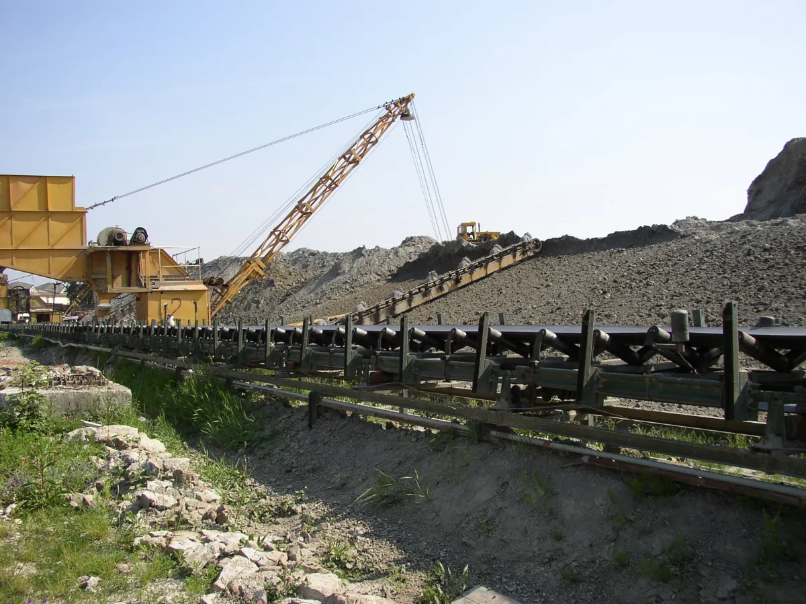
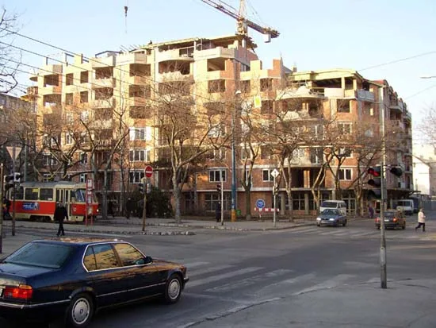
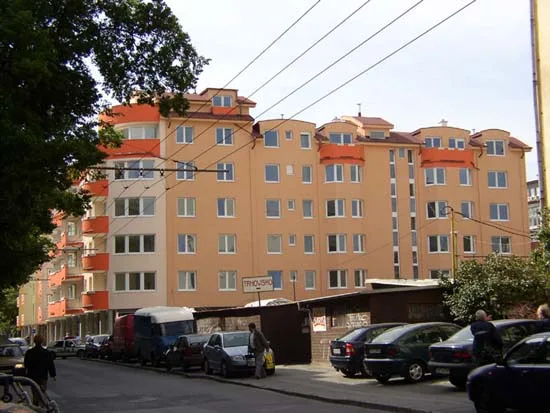
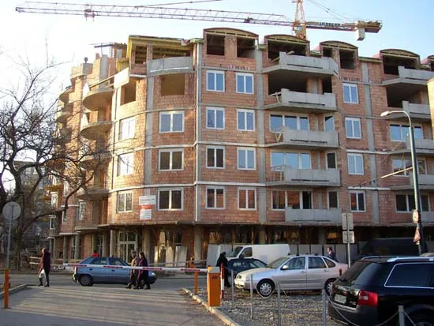

PE II
Moderné robotizované stredisko na výrobu tehliarskych murovacích materiálov. Pôvodný web zdôrazňuje kontrolu parametrov súvisiacich s výrobnou kvalitou, tepelnotechnickými a zvukovoizolačnými vlastnosťami.
Katalóg výrobkov TermoBRIK je dostupný na stiahnutie. Stiahnuť katalóg (PDF)
Pezinské tehelne – Paneláreň, a.s.
Spoločnosť vyrába pálené murovacie materiály TermoBRIK, keramické nosníky, stropné vložky a keramické preklady.
V skratke
Ponuka pokrýva obvodové a nosné murivo, priečky, akustické murivo, stropné prvky a preklady.
Pôvodný web prezentuje spoločnosť nielen ako výrobcu jednotlivých tehál, ale ako dodávateľa navzájom nadväzujúcich prvkov pre hrubú stavbu. Súčasťou ponuky je aj technické poradenstvo a práca s projektovou dokumentáciou.

Výrobné zázemie
Rozdelenie vychádza z opisov výrobných stredísk zverejnených spoločnosťou.
Moderné robotizované stredisko na výrobu tehliarskych murovacích materiálov. Pôvodný web zdôrazňuje kontrolu parametrov súvisiacich s výrobnou kvalitou, tepelnotechnickými a zvukovoizolačnými vlastnosťami.
Stredisko prešlo etapovými rekonštrukciami technológie, merania a regulácie. Vyrába sa tu kompletný sortiment tehliarskych murovacích materiálov.
Výroba keramických nosníkov s priestorovou výstužou a keramických prekladov. Pôvodný web uvádza aj technológiu prípravy suroviny na udržanie jej homogenity.
Murovacie materiály, stropný systém a preklady tvoria portfólio, ktoré možno vyberať v súvislostiach celého projektu.
Výber z histórie
Ide o stručný výber overiteľných míľnikov z rozsiahlej historickej sekcie pôvodného webu.
Podľa zverejnených dejín sa výroba pálenej tehly v Pezinku spomína v kráľovskom privilégiu Mateja II. z 31. marca 1615.
Pôvodný web uvádza rok 1872 ako založenie podniku, pravdepodobne na mieste staršej mestskej tehelne. Pôvodný sortiment tvorili keramické kachle a ručne vyrábaná plná tehla.
Začala sa výstavba prvej Hoffmanovej kruhovej pece, ktorá patrila v danom období medzi moderné tehliarske zariadenia.
Aktuálny web opisuje strediská PE II, OK-1 a Paneláreň a ich úlohy pri výrobe murovacích materiálov, nosníkov a prekladov.
Dôveryhodnosť
Pôvodný web sprístupňuje certifikáty pre systémy manažérstva kvality, environmentálneho manažérstva a bezpečnosti a ochrany zdravia pri práci, ako aj protokoly k rádioklidom.
Na novom webe tieto podklady nepretvárame na všeobecné marketingové tvrdenia. Návštevník sa môže prekliknúť priamo na konkrétne dokumenty a overiť ich rozsah.
Galéria
Bez dopĺňania názvov projektov, miest či technických parametrov, ktoré pôvodný zdroj neuvádza.



Kontakt na výrobu
Vyberte tému dopytu a spojte sa s príslušným oddelením.